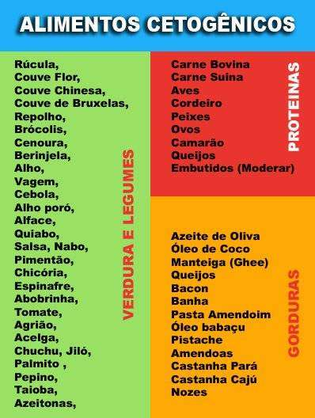
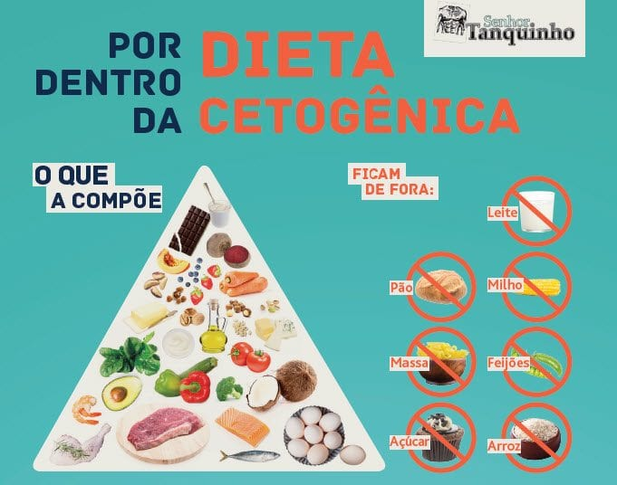
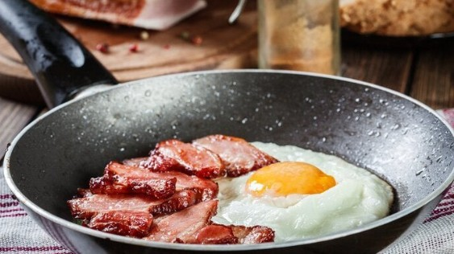

A dieta Cetogênica não é uma dieta qualquer pois milhões de pessoas tentam uma dieta após a outra apenas para acabar no mesmo lugar. Na verdade, muitos de nós fazemos dieta após dieta e ficamos cada vez mais pesados a cada vez que tentamos.
Já é ruim o suficiente que muitas dessas dietas não consigam manter o peso, mas quando você sai da dieta, ganha mais quilos. É uma situação muito frustrante e muitas pessoas basicamente pensaram que, fora da cirurgia, perder peso de forma sustentável é praticamente um sonho.
que o verdadeiro culpado pela cintura explosiva das pessoas é o açúcar A velha ideia de comer muitas frutas, alimentos ricos em amido e vegetais ricos em amido está, na verdade, deixando você doente. Leva à inflamação; aumenta as chances de desenvolver certos tipos de câncer; e inflama tanto o sistema que pode colocar as pessoas em risco de doenças cardiovasculares.
Qual é exatamente o problema com o amido, açúcar e carboidratos elevados e por que você deve evitá-los? Os carboidratos, amido e açúcar são convertidos em glicose e causam um pico de insulina. Como a insulina entra na corrente sanguínea para processar a glicose, que se torna a principal fonte de energia. Um pico de insulina também pode resultar no armazenamento de gorduras. O corpo usa carboidratos e gorduras como energia, sendo os carboidratos, amido e o açucar a fonte primária.
quanto mais carboidratos, amido e açúcar você consumir em sua dieta diária, menos gordura será queimada como energia. Em vez disso, o pico de insulina resultará em mais armazenamento de gordura.
seja o corpo usará todos os carboidratos, Açúcar e Amido como fonte principal de energia e as gorduras serão acomuladas ocasionando o aumento de peso e gordura.
Ao consumir ovos, abacates e outros alimentos com alto teor de gordura e baixo teor de carboidratos, você pode viver mais saudável enquanto perde peso de forma sustentável. A chave é alcançar a cetose.
Quando você consome menos carboidratos, o corpo entra em um estado chamado de cetose. Assim, o nome para esta dieta baixa em carboidratos.
A cetose ajuda o corpo a sobreviver com menos comida. Ao estar em cetose, você 'treina' seu corpo para utilizar gorduras como a principal fonte de energia em vez de carboidratos, simplesmente porque há quase zero carboidratos para começar.
Durante a cetose, o fígado decompõe as gorduras em cetonas, o que permite que o corpo use a gordura como energia. Durante uma dieta cetogênica, não passamos fome de calorias; nós privamos o corpo de carboidratos. Isso torna a perda de peso fácil e natural. Mais tarde você aprenderá que a dieta cetogênica tem muitos benefícios adicionais para a saúde além da perda de gordura.
A dieta cetônica é uma dieta fácil, mas algumas pessoas sentem falta de feijão e pão. Demora um pouco para se acostumar, afinal, começar algo novo é um desafio. Mas, no final das uma vez por todas. E poder comer Bacon em uma dieta é uma recompensa!!!
  